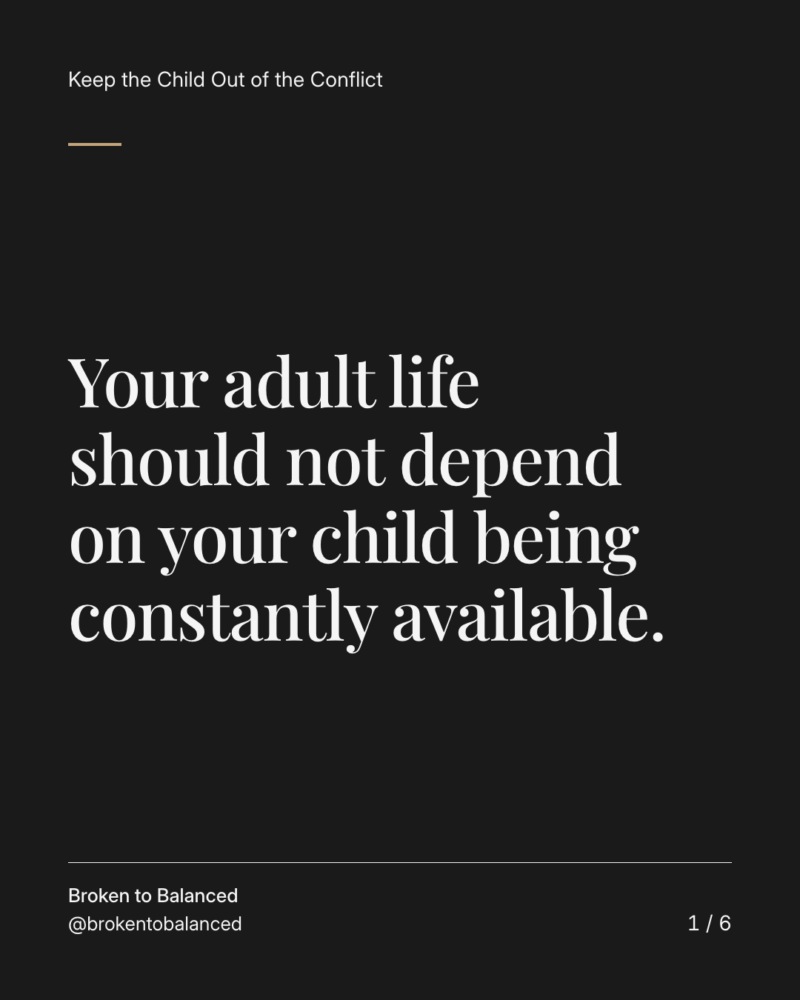
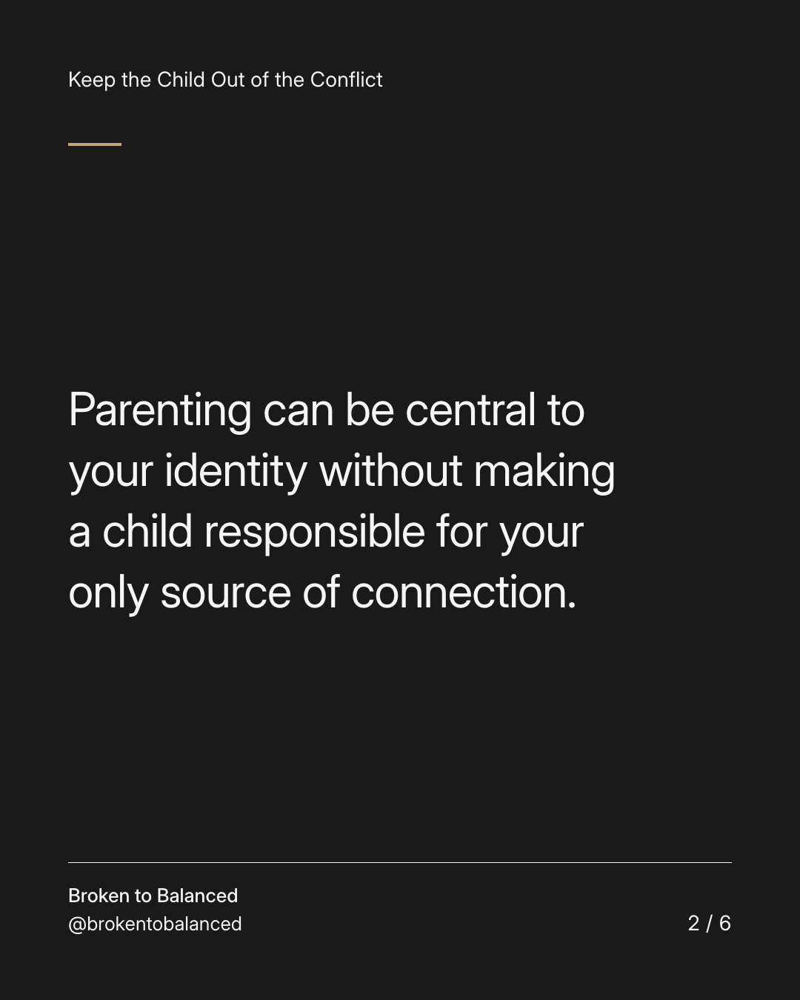
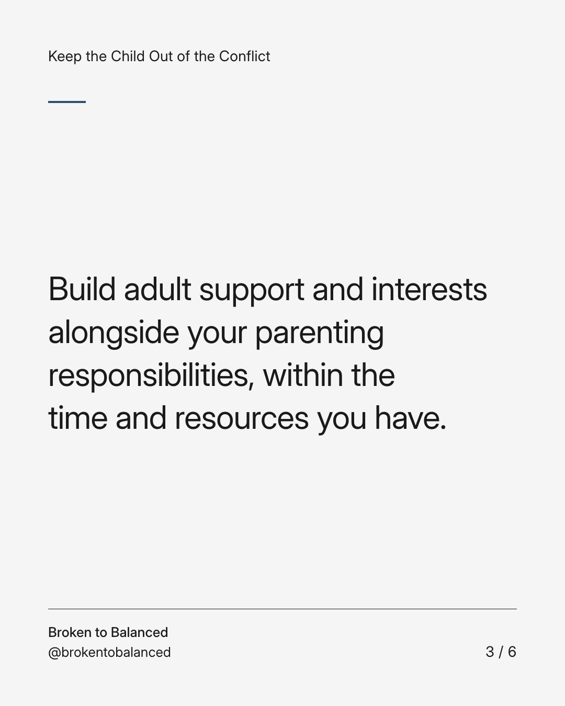
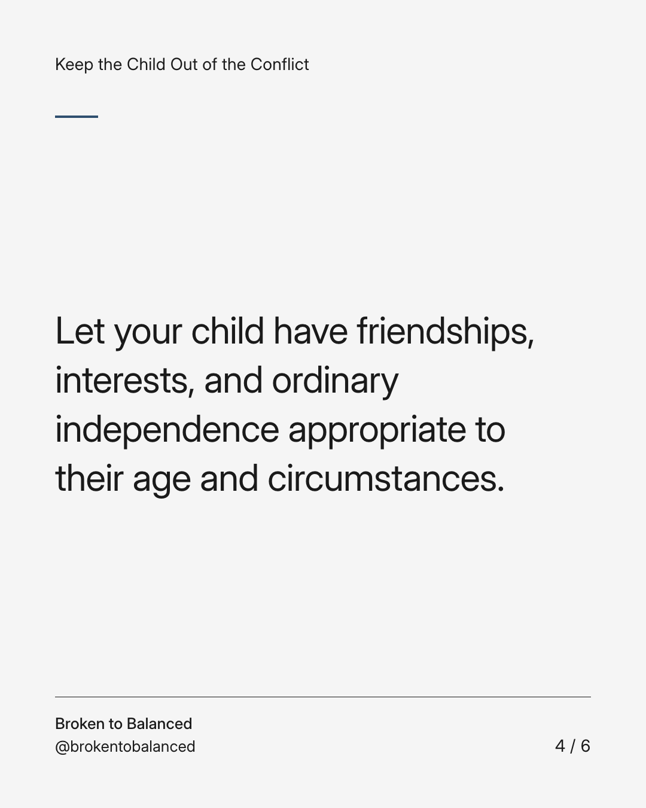
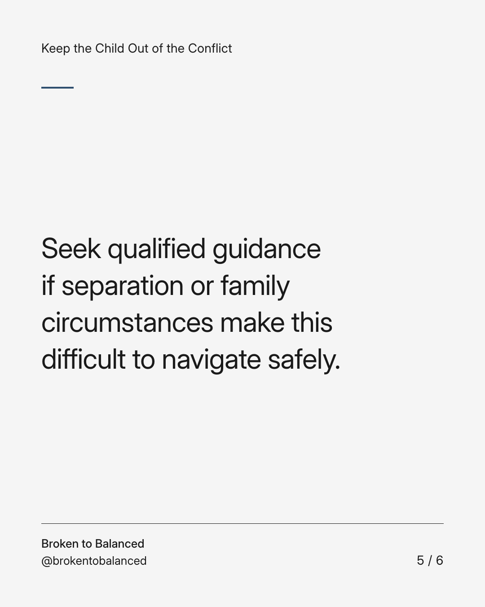
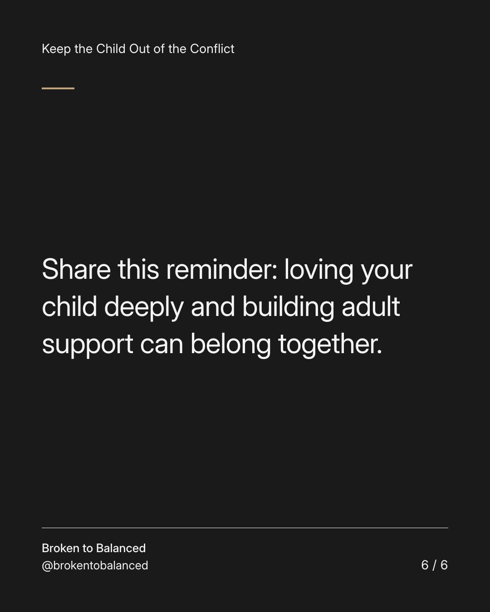

Exact text and accessibility text
Your adult life should not depend on your child being constantly available.
Slide 1 of 6. Your adult life should not depend on your child being constantly available.


Exact text and accessibility text
Parenting can be central to your identity without making a child responsible for your only source of connection.
Slide 2 of 6. Parenting can be central to your identity without making a child responsible for your only source of connection.


Exact text and accessibility text
Build adult support and interests alongside your parenting responsibilities, within the time and resources you have.
Slide 3 of 6. Build adult support and interests alongside your parenting responsibilities, within the time and resources you have.


Exact text and accessibility text
Let your child have friendships, interests, and ordinary independence appropriate to their age and circumstances.
Slide 4 of 6. Let your child have friendships, interests, and ordinary independence appropriate to their age and circumstances.


Exact text and accessibility text
Seek qualified guidance if separation or family circumstances make this difficult to navigate safely.
Slide 5 of 6. Seek qualified guidance if separation or family circumstances make this difficult to navigate safely.


Exact text and accessibility text
Share this reminder: loving your child deeply and building adult support can belong together.
Slide 6 of 6. Share this reminder: loving your child deeply and building adult support can belong together.
Exact caption
Plain-text fallback: select and copy the caption.